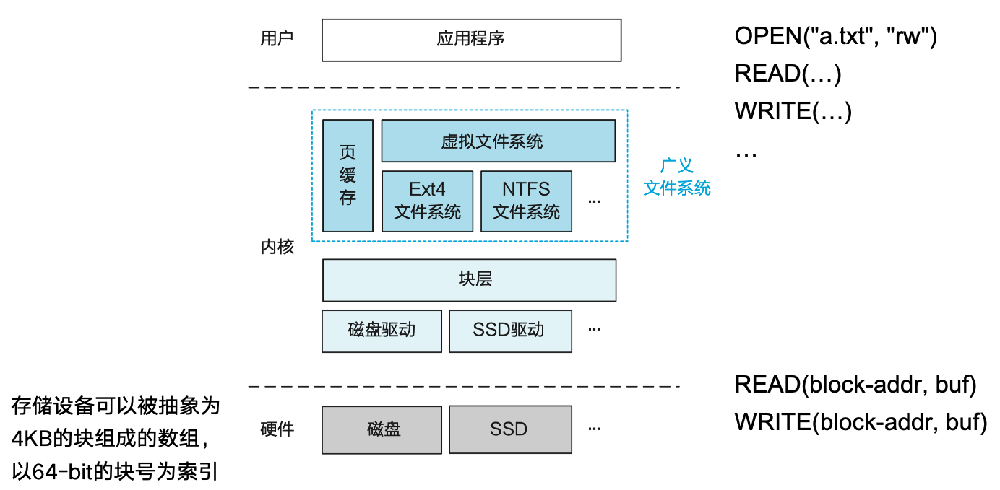
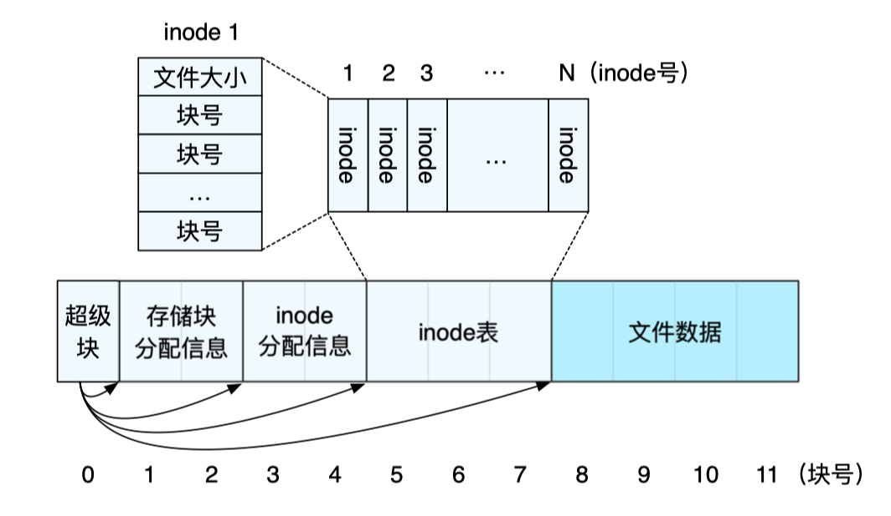
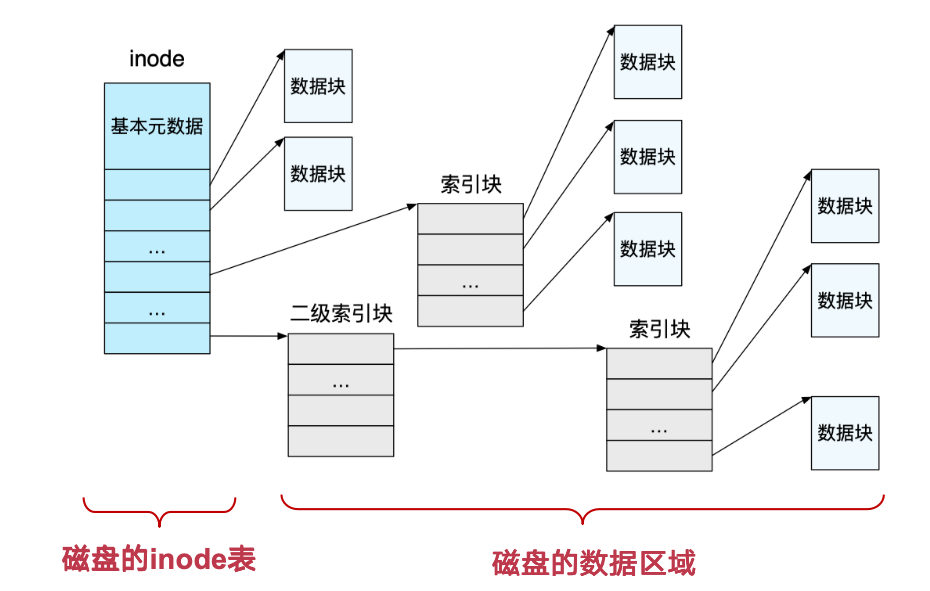
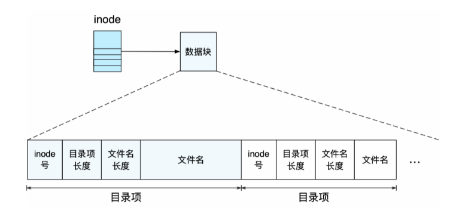
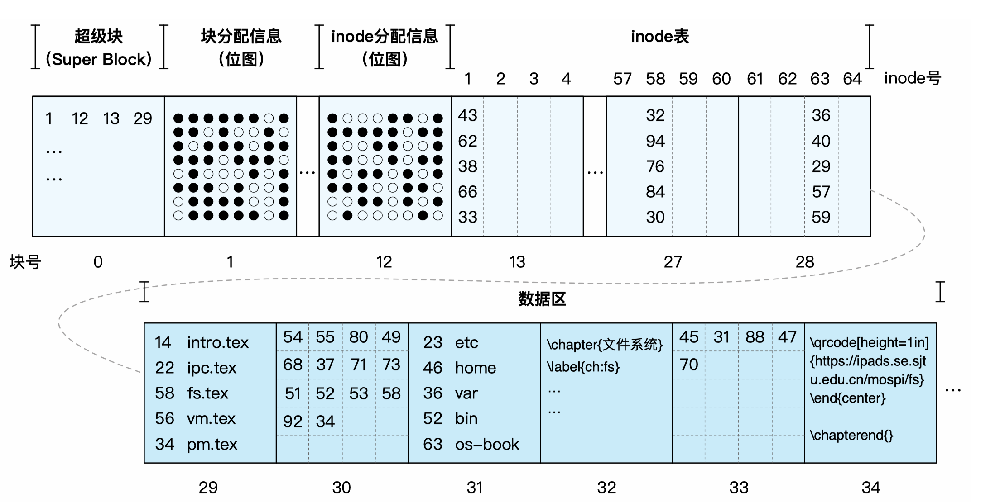

操作系统 SJTU 版(4)：文件管理
Last updated on December 9, 2025 am
这是《操作系统》SJTU-CS3601 课程的课程笔记系列。本文整理部分为“第 4 部分：文件管理”。
Lecture 15: 文件系统
- 文件：对数据的一种抽象
- 定义：有名字且持久化的一段数据
- 文件系统：提供了一组操作文件的 API
- UNIX 文件系统的 API：
- OPEN, READ, WRITE, SEEK, CLOSE
- FSYNC
- STAT, CHMOD, CHOWN
- RENAME, LINK, UNLINK, SYMLINK
- MKDIR, CHDIR, CHROOT
- MOUNT, UNMOUNT
- 文件系统的位置：

Inode：文件的元数据
-
inode：index node，记录文件多个磁盘块的位置
- 记录多个磁盘块号
- 头部记录文件 size 信息
- 每个文件对应一个 inode
- 称为文件元数据（Metadata）
-
文件读写操作：
- 给定 inode 和文件内偏移（offset）
- 根据 offset 计算出对应的磁盘块号
- 若 offset 超出 size 则返回错误
-
inode 文件系统的存储布局：
- inode 表：记录所有 inode
- 可以看成 inode 的大数组
- 每个 inode 使用 inode 号作为索引
- 此时，inode 号即为文件名
- inode 分配信息（位图）：
- 记录哪些inode已分配，哪些空闲
- 超级块：Super Block
- 记录磁盘块的大小、其他信息的起始磁盘块位置，等等
- 是整个文件系统的元数据
- inode 表：记录所有 inode

-
inode 文件系统的基本操作：
- 加载文件系统：
- 首先读取超级块，然后找到其他信息
- 创建新文件：
- 根据 inode 分配信息找到空闲 inode，将 inode 对应的 bit 设置为 1
- 返回 inode 在 inode 表中的索引，作为文件名
- 查找文件（根据 inode 号）：
- 在 inode 表中根据 inode 号定位该 inode
- 删除文件：
- 在 inode 分配表中，将该 inode 对应的 bit 设置为 0
- 加载文件系统：
-
多级 inode：单级 inode 过大的问题
- 引入索引块：指向数据块；以及二级索引块：指向索引块；…
- 索引块（包括二级索引块）不在 inode 表的存储区域，而是在数据区域
- 一个多级 inode 占用的空间很少
- 支持更大的文件：可以启用三级索引，甚至四级索引

目录：也是一种文件
- inode 与文件名：
- inode 本身已经包含了一个文件的所有信息
- 可以使用 inode 号（inode 表的索引）作为文件名
- 给定一个 inode 号，就可以访问文件的所有数据
- inode 作为文件名的缺点：
- 名字很难记住，不够 user-friendly
- 名字依赖于 inode 表位置的名字（一旦改变了位置，就必须改变文件名）
- inode 本身已经包含了一个文件的所有信息
- 字符串的文件名：
- 以字符串作为文件名的好处：
- 在操作文件时，将文件的元数据隐藏起来，用户无需感知
- 不依赖特定的存储设备
- 实现字符串文件名到 inode 号的映射：
- 使用映射表，记录字符串到 inode 号的映射
- 将该表保存在一类特殊的文件中，称为目录文件
- 目录本身也是一个文件，同样有 inode
- 复用 inode 机制来实现目录
- 以字符串作为文件名的好处：
- 目录文件与目录项：
- 目录中的每条映射称为一个目录项
- 每一条目录项记录了一个 inode 号与文件名字符串的映射
- 一个目录可以记录很多目录项
- 目录文件的大小（占用空间）与其记录的文件大小无关
- 目录支持查找操作：
- 给定一个目录文件和字符串
- 在目录文件中查找字符串，并返回对应的 inode
- 目录中的每条映射称为一个目录项

-
目录的递归与根目录：
- 目录中可以记录子目录
- 因为目录本身也是一个文件
- 通过“/”来分割父目录和子目录
- 最顶端的目录没有目录名（文件名）
- 被称为“根目录”（root）
- 根目录没有文件名，在“/”的前面什么都没有
- 绝对路径和相对路径
- 绝对路径：如“/home/alice/test.md”
- 相对路径：如“./test.md”
- 目录中可以记录子目录
-
文件的查找过程：

操作系统 SJTU 版(4)：文件管理
https://cny123222.github.io/2025/12/09/操作系统-SJTU-版-4-：文件管理/